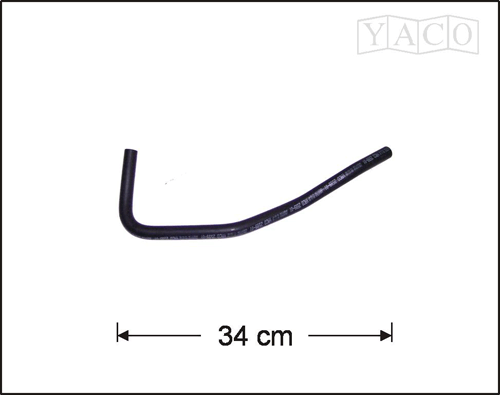
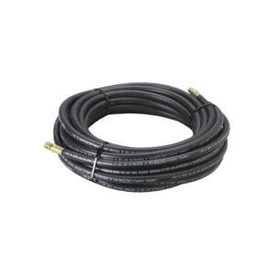
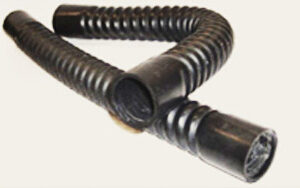
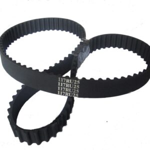
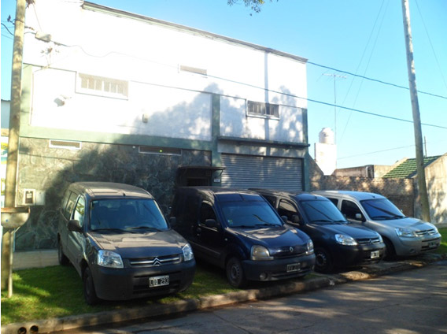

Mi cuenta
Mi cuenta 

DISTRIBUCIÓN DE ARTÍCULOS DE CAUCHO
Conectamos cada pieza.
Movemos tu negocio.
Mangueras y soluciones de caucho para el mercado automotor. Un catálogo pensado para ayudarte a encontrar el repuesto que necesitás.
Atención cercana · Asesoramiento · Distribución
PIEZAS YACO01 / 03
ARTÍCULOS DE CAUCHO
MANGUERAS AUTOMOTOR✳ARTÍCULOS DE CAUCHO✳REPUESTOS YACO✳ASESORAMIENTO CERCANO✳✳✳✳
NUESTRO CATÁLOGO
Un buen repuesto
hace la diferencia.
Buscá por código, pieza o vehículo, y prepará una lista para consultar precios y disponibilidad por WhatsApp.
Ver catálogo completo
MANGUERASMANGUERAS
Manguera de caucho
Una pieza, múltiples recorridos.

MULTIPLEXCORRUGADOS
Manguera Multiplex
Una opción flexible para tu aplicación.

TRANSMISIÓNCORREAS
Correa dentada
Consultanos por la aplicación que buscás.
Una selección del catálogo YACOVer todos los productos

Una historia de
experiencia y compromiso.
experiencia y compromiso.
SOMOS DISTRIGOM
Cerca de quienes
mantienen todo en marcha.
Somos una empresa dedicada a la distribución de artículos y mangueras de caucho para el mercado automotor. Desde nuestros inicios, construimos una amplia cartera de clientes y acompañamos cada búsqueda con atención personalizada.
Trabajamos para ofrecer variedad, disponibilidad y asesoramiento, con el compromiso de entender las necesidades de cada cliente.
Más sobre nosotrosDISTRIGOM ARTÍCULOS DE CAUCHO
MARCAS DEL SECTOR
Un catálogo conectado
con grandes fabricantes.
TE ACOMPAÑAMOS
Encontrar la pieza
correcta, más fácil.
Armá una lista de cotización y consultá al equipo. Los precios, el stock y la compatibilidad se confirman por WhatsApp; esta demo no procesa compras.
Buscá tu repuesto
Encontrá productos por nombre, código YACO, marca o aplicación.
Armá tu lista
Agregá artículos y cantidades; la lista queda guardada en este navegador.
Consultá por WhatsApp
Prepará tu mensaje y confirmá precios, stock y compatibilidad con el equipo.
ESTAMOS PARA AYUDARTE